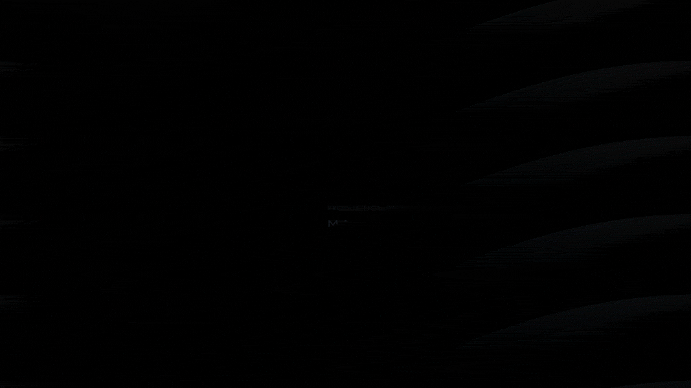
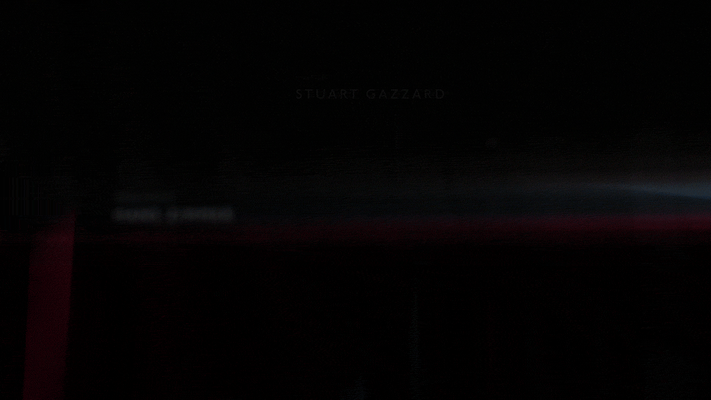
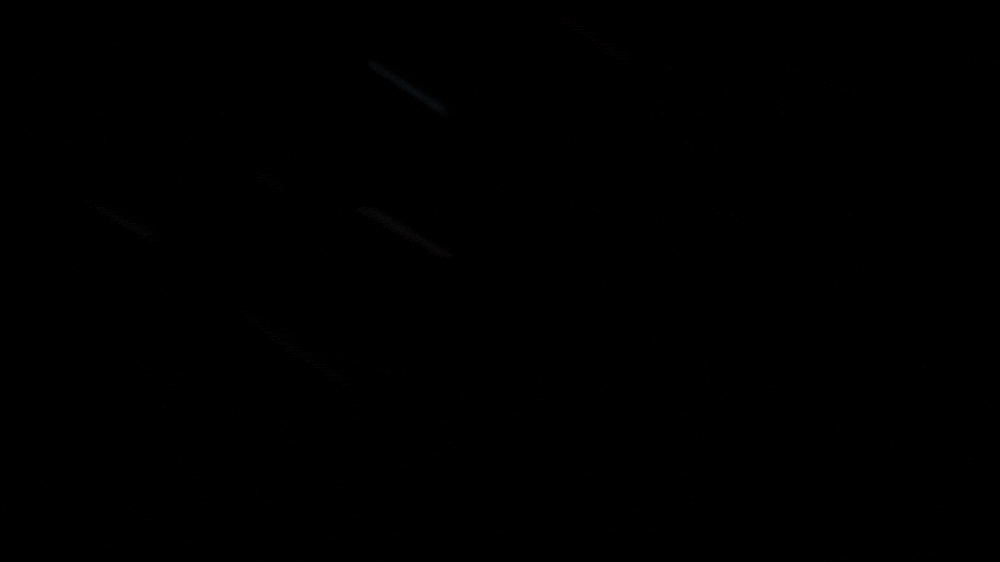
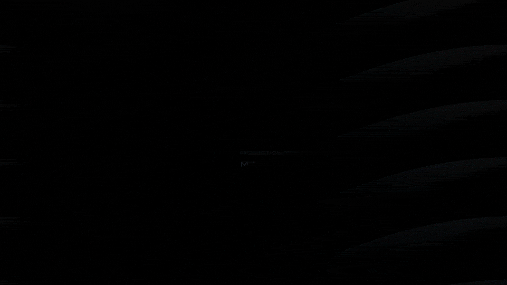
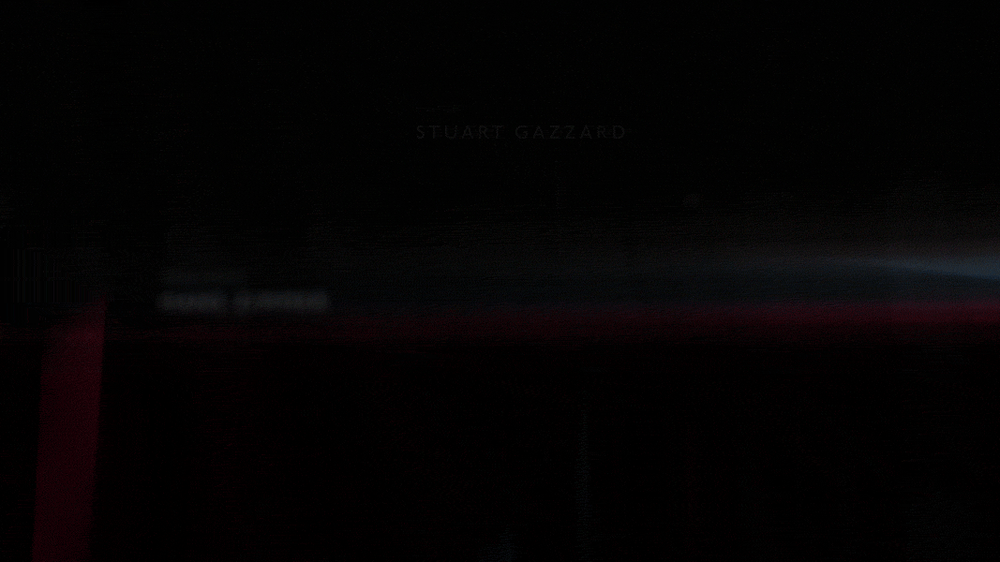
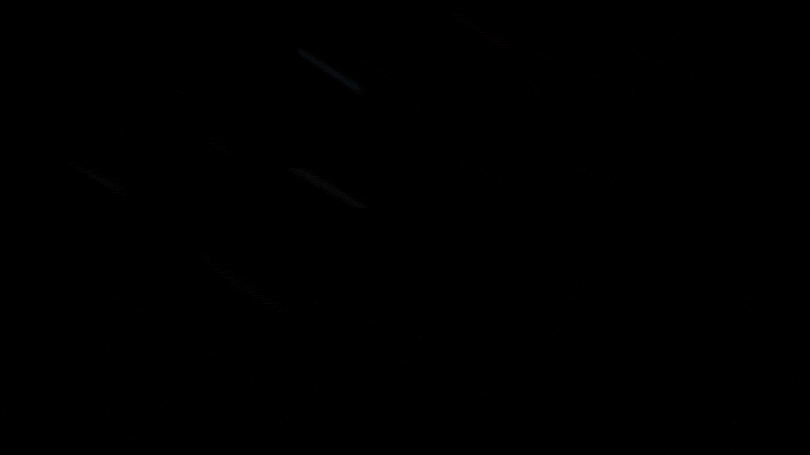

Ringworld—Title Sequence
Motion Graphic| 2018 | College Project
Ringworld, a co-production with MGM, is based on Niven’s science fiction book series from the 1970s and tells the story of Louis Gridley Wu, a bored man celebrating his 200th birthday in a technologically advanced, future Earth. Upon being offered one of the open positions on a voyage, he joins a young woman and two aliens to explore Ringworld, the remote artificial ring beyond “Known Space.” The books cover their thrilling journey as they attempt to fulfill their original mission to uncover the mysteries of Ring.
 





"Take Christmas ribbon, an inch wide, the kind you use to wrap presents. Set a lighted candle on a bare floor. Take fifty feet of this ribbon, and string it in a circle with a candle at the center, balancing the ribbon on edge so that the inner side catches the candlelight. (Niven, 71)"
In this title sequence, I am using ribbons as a metaphor of the ringworld to show the multiplicity of this man-made world.
Here is the video demo.